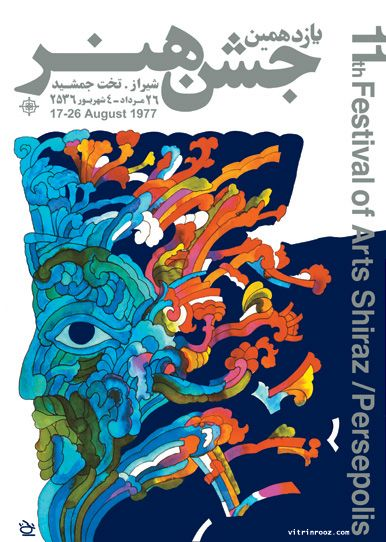

Ghobad Shiva is an Iranian graphic designer, born in 1940 in
Hamdan, Iran. He graduated from the Faculty of Fine Arts from the University
of Iran in 1966 and later earned a master's degree in Communication Design
from Pratt in New York. He frequently borrows from cultural traditions from Iranian
art (most notably Persian calligraphy) in his innovative graphic designs. He has
designed movie posters and posters for concerts, among other projects.
